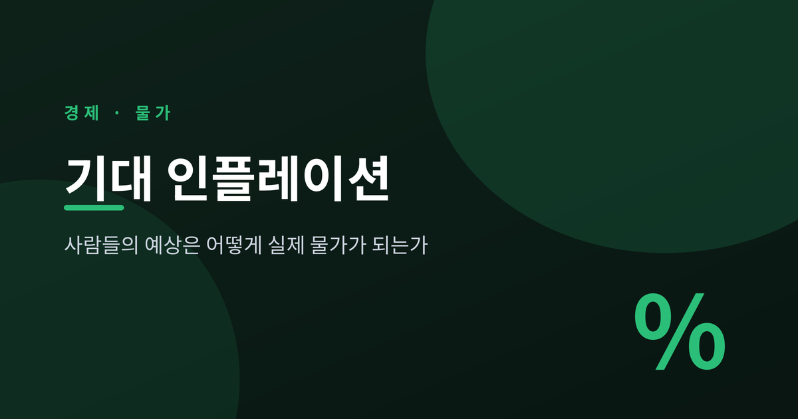
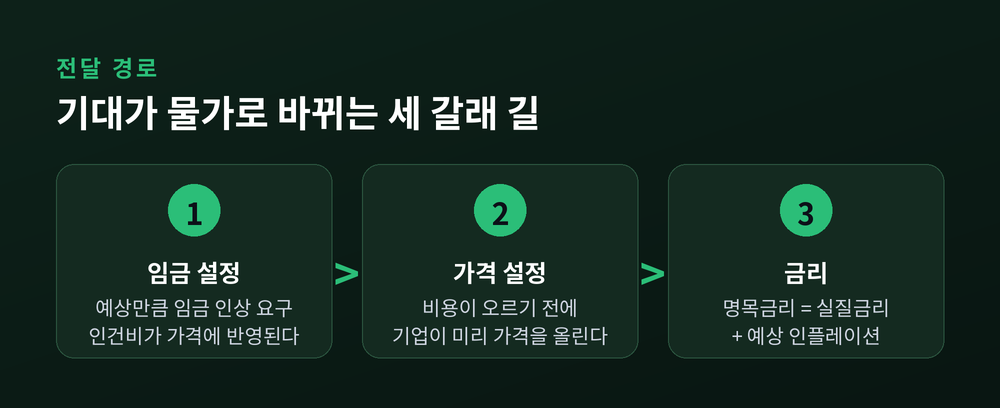
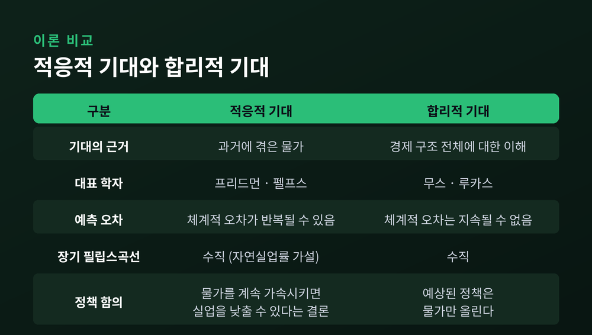
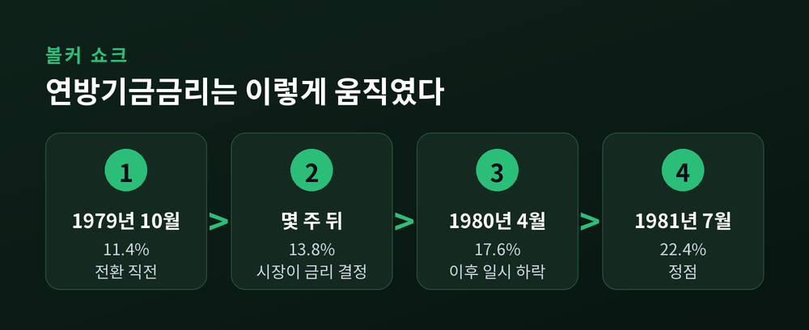
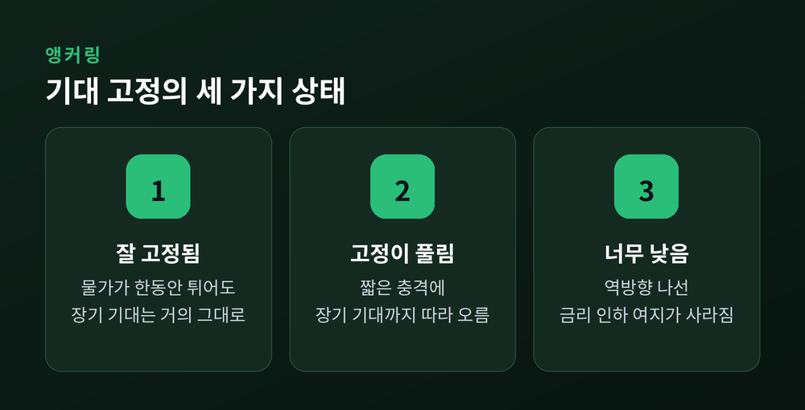
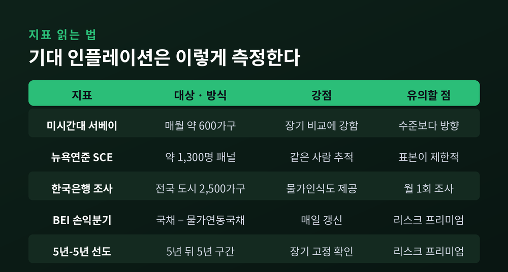
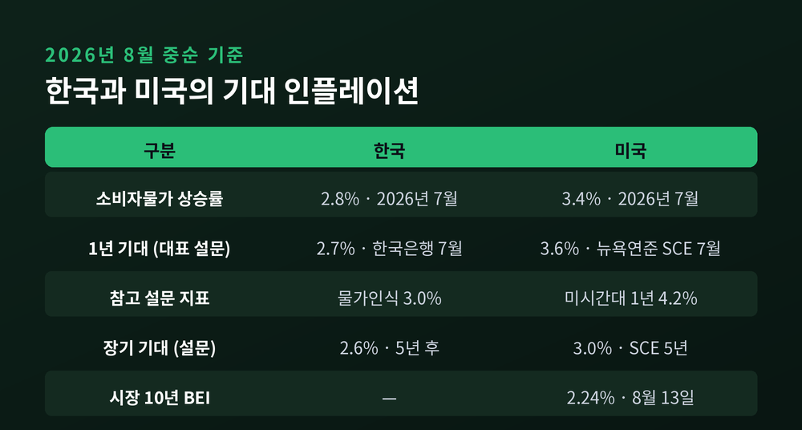

이번 글에서는 기대 인플레이션을 정리해 보겠습니다. 사람들의 예상이 어떤 경로로 실제 물가가 되는지, 그리고 그 예상을 재는 지표들을 어떻게 읽어야 하는지 다룹니다. 1970년대의 실패와 2026년 여름의 최신 수치를 함께 놓고 보겠습니다.
기대 인플레이션은 소비자와 기업, 투자자가 앞으로 물가가 얼마나 오를 것이라 예상하는 정도를 말합니다.
이것이 중요한 이유는 하나입니다. 실제 물가가 그 예상에 따라 달라지기 때문입니다.
브루킹스연구소 허친스센터의 설명이 명확합니다. 모두가 앞으로 1년간 물가가 3% 오를 것이라 예상하면, 기업은 가격을 최소한 3% 올리려 하고 노동자는 그만큼의 임금 인상을 요구합니다. 다른 조건이 같다면 기대 인플레이션이 1%포인트 오를 때 실제 인플레이션도 1%포인트 오르는 경향이 있습니다.
예보관이 비가 온다고 말한다고 비가 오지는 않습니다. 그러나 물가는 다릅니다. 모두가 오른다고 믿으면 실제로 오릅니다.
기대 인플레이션은 예보가 아니라 재료입니다.
기대가 실제 물가로 바뀌는 통로는 크게 셋입니다.
첫째, 임금 설정 경로입니다. 노동자와 노조가 예상 물가만큼 임금 인상을 요구하면 기업의 인건비가 오르고, 그 부담이 판매가격에 반영됩니다.
둘째, 가격 설정 경로입니다. 기업이 투입비용의 상승을 예상하면, 비용이 실제로 오르기 전에 미리 가격을 올려둡니다. 소비자 역시 물가 압력이 이어질 것으로 보면 소비와 저축, 투자 행동을 바꿉니다.
셋째, 금리 경로입니다. 명목금리는 실질금리와 예상 인플레이션의 합입니다. 대출자와 투자자는 만기까지의 예상 물가를 금리에 미리 얹어둡니다.
세 경로 모두 공통점이 있습니다. 물가가 오르기 전에 이미 작동한다는 점입니다.

사람들이 예상을 만드는 방식을 두고 경제학은 오래 논쟁했습니다.
적응적 기대는 과거에 겪은 물가를 근거로 미래를 예상한다고 봅니다. 아이디어 자체는 어빙 피셔의 『화폐의 구매력』(1911)까지 거슬러 올라가고, 필립스곡선에 본격적으로 들여온 것은 밀턴 프리드먼 등 통화주의자들입니다. 솔로우(1969)와 고든(1970)이 이 가정 위에서 곡선을 추정했습니다.
문제가 하나 있었습니다. 이 가정대로라면 물가를 계속 가속시키기만 해도 실업률을 영구히 낮출 수 있다는 결론이 나옵니다. 사람들이 매번 같은 방식으로 속아준다는 뜻입니다.
프리드먼(1968)과 펠프스는 여기에 자연실업률 가설을 세웠습니다. 예상 인플레이션율마다 별개의 단기 필립스곡선이 있고, 장기 곡선은 수직이라는 것입니다. 물가와 실업의 맞바꿈은 단기에만 존재한다는 결론입니다.
합리적 기대는 다른 답을 내놓습니다. 무스(1961)는 사람들이 경제 구조를 이해한다면 체계적인 예측 오차가 계속 반복될 수 없다고 보았습니다. 루카스(1972)는 이 가정 위에서 단기에는 우하향하고 장기에는 수직인 곡선을 처음으로 이론적으로 도출했습니다.
루카스 비판(1976)의 요지는 이렇습니다. 과거 경험으로 계수를 맞춘 모형을 정책 평가에 쓰는 것은 타당하지 않습니다. 정책이 바뀌면 기대를 만드는 방식 자체가 바뀌기 때문입니다.
여기서 유명한 함의가 나옵니다. 예상된 통화량 변화는 물가만 올리고 실물 생산은 건드리지 못합니다. 실물을 움직이는 것은 예상하지 못한 변화뿐입니다.
두 이론 중 하나만 고를 필요는 없습니다. 오늘날 중앙은행은 가계 설문과 시장 지표를 나란히 놓고 봅니다.

이론이 현실이 된 사례가 있습니다.
브루킹스의 정리에 따르면, 1970~80년대의 지속적인 고물가로 기대 인플레이션이 고정에서 풀렸고 실제 물가와 함께 올라갔습니다. 당시 사람들이 임금-물가 나선이라 부른 현상입니다.
고리는 단순합니다. 높은 물가가 기대를 끌어올리고, 노동자는 구매력 손실을 메우려 임금 인상을 요구하고, 기업은 그 인건비를 가격에 반영하고, 그래서 물가가 다시 오릅니다.
여기에 제도가 기름을 부었습니다. 당시 미국 노조는 물가연동 임금조항, 이른바 COLA를 계약에 흔히 넣었습니다. 'COLA 더하기 3%' 같은 형태로 생활비가 오르면 임금이 자동으로 올랐습니다. 그 시절 미국 노동자의 최소 네 명 중 한 명이 노조원이었습니다.
자동 연동은 구매력을 지켜줍니다. 동시에 나선을 멈추기 어렵게 만듭니다.
결과는 숫자로 남았습니다. 1973년 오일쇼크가 지나간 뒤에도 물가는 내려오지 않았고, 1973년부터 1982년까지 미국 인플레이션은 5.0% 아래로 거의 내려가지 않았습니다. 때때로 두 자릿수를 기록했습니다.
기대가 오르고 나면 실업률이 높아도 물가를 끌어내리기 어렵습니다. 이 대목이 1970년대가 남긴 가장 비싼 교훈입니다.
폴 볼커는 1979년 8월 연준 의장이 되었습니다.
전환점은 1979년 10월 6일 토요일이었습니다. 연준은 연방기금금리 대신 비차입지준을 목표로 삼겠다고 발표했습니다. 시장이 정하는 금리가 정치적 제약 없이 오를 수 있게 만든 것입니다.
금리는 이렇게 움직였습니다. 10월 5일 11.4%였던 연방기금금리는 몇 주 만에 13.8%가 되었고, 1980년 4월 17.6%까지 올랐습니다. 1980년 중반 경기침체로 잠시 내려갔다가, 1981년 7월 22.4%로 정점을 찍었습니다.
주목할 대목은 그다음입니다. 당시 디스인플레이션의 대략 절반은 긴축 그 자체가 아니라, 연준이 물가를 낮추기 위해 경기침체까지 감수한다는 사실을 사람들이 확인한 뒤 기대가 다시 고정된 데서 나왔다는 평가가 있습니다.
볼커와 FOMC 위원들도 같은 생각이었습니다. 저물가에 대한 신뢰를 얻는 것이 성공의 핵심이라고 보았고, 장기금리를 기대 인플레이션과 정책 신뢰도의 지표로 삼았습니다.
볼커가 꺾은 것은 물가라기보다 "물가는 계속 오른다"는 믿음이었습니다.

중앙은행이 말하는 기대 고정, 앵커링의 뜻은 생각보다 좁습니다.
벤 버냉키 전 연준 의장의 2022년 정의가 가장 간결합니다. 고정이란 들어오는 데이터에 상대적으로 둔감하다는 뜻입니다.
장기 기대치보다 높은 물가를 한동안 겪었는데도 장기 기대치가 거의 변하지 않으면 기대는 잘 고정된 것입니다. 반대로 짧은 기간의 높은 물가에 반응해 장기 기대치를 크게 올려버리면 고정이 약한 것입니다.
고정이 잘 되어 있으면 정책 운신의 폭이 넓어집니다. 버냉키의 설명대로, 침체형 수요충격에는 더 과감하게 대응하고 인플레이션형 공급충격에는 덜 과격하게 대응할 수 있습니다. 유가가 한 번 튀어도 사람들이 과잉 반응하지 않기 때문입니다.
반대 방향의 위험도 있습니다. 기대가 목표보다 낮게 내려앉으면 역방향 나선이 생깁니다.
제롬 파월 의장은 2020년 새 정책체계를 발표하며 이 점을 짚었습니다. 목표보다 낮은 물가는 장기 기대를 끌어내리고, 그 기대가 다시 실제 물가를 더 낮춥니다. 기대가 낮아지면 명목금리도 함께 낮아져, 불황에 금리를 내릴 여지 자체가 사라집니다.
연준이 2020년 8월 유연평균물가목표제를 도입한 배경이기도 합니다.

기대를 재는 방법은 크게 셋입니다. 가계와 기업 설문, 전문 예측가 서베이, 그리고 물가연동 금융상품입니다.
설문부터 보겠습니다.
미시간대 소비자 서베이는 매월 약 600가구에 향후 1년과 5~10년의 물가 예상을 묻습니다. 역사가 길어 장기 비교에 강합니다.
뉴욕연준 소비자기대조사(SCE)는 전국 대표성을 갖춘 약 1,300명의 가구주를 대상으로 한 인터넷 패널 조사입니다. 응답자가 최대 12개월간 패널로 남기 때문에, 같은 사람의 기대가 어떻게 변하는지 추적할 수 있습니다. 이 점이 가장 큰 강점입니다.
한국은행 소비자동향조사는 전국 도시 2,500가구를 대상으로 향후 1년 기대인플레이션율과 지난 1년의 물가인식을 함께 냅니다.
여기서 반드시 기억할 원칙이 하나 있습니다. 브루킹스에 따르면 미시간대 응답자들은 역사적으로 실제보다 높은 물가를 예상해 왔습니다. 그래서 분석가들은 수준이 아니라 방향을 봅니다.
4%라는 숫자 자체보다, 지난달보다 올랐는지 내렸는지가 중요합니다.
시장이 보는 기대는 채권 가격에 들어 있습니다.
BEI, 손익분기 인플레이션은 명목국채 금리에서 물가연동국채 금리를 뺀 값입니다. 두 채권에서 같은 실질수익률이 나오는 인플레이션율이므로, 시장이 예상하는 물가의 근사치가 됩니다.
세인트루이스 연은의 정의도 같습니다. 10년 BEI는 10년 명목국채와 10년 물가연동국채로 계산하며, 최신 값은 시장참가자들이 향후 10년 평균 물가를 얼마로 보는지를 뜻합니다.
5년-5년 선도 기대인플레이션율은 한 단계 더 나아갑니다. 지금부터 5년 뒤에 시작되는 5년 구간의 평균 예상 물가입니다. 당장의 유가와 환율 잡음을 걷어내고 장기 기대가 고정되어 있는지를 보는 지표입니다.
한국에도 같은 도구가 있습니다. 물가연동국고채(KTBi)는 원금과 이자를 물가에 연동시켜 실질구매력을 보장하는 채권입니다. 원금은 발행 당시 액면가에 물가연동계수, 즉 지급일 소비자물가지수를 발행 시 소비자물가지수로 나눈 값을 곱해 산출합니다. 국고채 지표종목에는 물가연동 10년물이 포함되어 있어, 10년 국고채와의 금리 차로 국내 BEI를 볼 수 있습니다.
다만 한계는 분명합니다. 시장 지표에는 순수한 기대만 담기지 않습니다. 물가 불확실성에 대한 보상, 즉 인플레이션 리스크 프리미엄이 섞여 있습니다. 완벽한 측정치가 아니라는 뜻입니다.

이제 최신 수치를 놓고 보겠습니다.
미국 쪽부터입니다.
2026년 7월 미국 소비자물가는 전년 동월 대비 3.4% 올랐습니다. 6월 3.5%에서 소폭 내려온 수치이고, 근원 CPI는 2.5%였습니다.
뉴욕연준이 2026년 8월 7일 발표한 7월 SCE에서는 1년 기대 인플레이션이 3.6%로 0.1%포인트 내렸습니다. 3년은 3.3%, 5년은 3.0%로 변동이 없었습니다. 응답자 간 의견 분산도 모든 구간에서 소폭 줄었습니다. 함께 본 1년 임금상승률 기대는 2.8%로, 12개월 평균 2.6%를 웃돌았습니다.
미시간대 2026년 7월 최종치는 결이 조금 다릅니다. 1년 기대는 4.2%로 6월 4.6%에서 내려왔지만, 전쟁 이전인 2026년 2월의 3.4%를 여전히 크게 웃돕니다. 5~10년 장기 기대는 3.3%로 6월과 같았습니다.
시장 쪽 숫자는 또 다릅니다. 세인트루이스 연은 자료 기준으로 10년 BEI는 2026년 8월 13일 2.24%, 5년 BEI는 8월 12일 2.24%, 5년-5년 선도 기대인플레이션율은 8월 13일 2.27%였습니다.
정리하면 이렇습니다. 가계 설문은 3%대 후반에서 4%대를 가리키는데, 채권시장이 보는 장기 기대는 2.2%대입니다.
한국은 어떨까요.
2026년 7월 소비자물가는 전년 동월 대비 2.8% 올라 6월 3.2%에서 내려왔습니다. 4월 2.6% 이후 석 달 만의 2%대 복귀입니다. 다만 근원물가는 다른 방향이었습니다. OECD 기준 근원물가는 2.6%로 2023년 12월 이후 가장 높았습니다.
한국은행의 2026년 7월 소비자동향조사, 조사기간 7월 13일부터 21일까지의 결과를 보겠습니다. 향후 1년 기대인플레이션율은 2.7%로 6월보다 0.1%포인트 내렸습니다. 3년 후는 2.6%, 5년 후도 2.6%입니다. 지난 1년의 체감 물가를 뜻하는 물가인식은 3.0%로 전월과 같았습니다.
물가인식 3.0%가 기대인플레이션 2.7%보다 높습니다. 지난 1년은 꽤 올랐지만 앞으로는 조금 덜 오를 것이라 보고 있다는 뜻입니다.
기대 형성의 재료도 바뀌었습니다. 향후 1년 물가에 영향을 줄 품목으로 석유류제품 57.5%, 농축수산물 34.1%, 공공요금 33.6%가 꼽혔는데, 6월과 비교하면 농축수산물이 5.5%포인트, 공공요금이 4.0%포인트 늘어난 반면 석유류제품은 20.0%포인트 급감했습니다.
정책도 움직였습니다. 한국은행 금융통화위원회는 2026년 7월 16일 기준금리를 연 2.50%에서 2.75%로 0.25%포인트 올렸습니다. 3년 6개월 만의 인상이며 금통위원 7명 전원이 찬성했습니다.
의결문의 표현이 이 글의 주제와 정확히 닿아 있습니다. 금통위는 단기 기대인플레이션율이 2%대 후반 수준을 이어갔다고 짚었고, 중기적 시계에서 물가 상승률이 목표 수준에서 안정될 수 있도록 하겠다고 밝혔습니다. 향후 물가 경로의 불확실성 요인으로는 국제 유가와 환율, 내수 개선 속도와 함께 임금 상승세 확산 정도를 지목했습니다.
임금 경로를 명시적으로 경계했다는 점이 눈에 띕니다.

지표를 나란히 놓으면 곧바로 의문이 생깁니다. 같은 시점, 같은 나라인데 왜 숫자가 이렇게 다를까요.
2026년 7월 기준 미국의 1년 기대는 미시간대가 4.2%, 뉴욕연준 SCE가 3.6%였습니다. 실제 7월 물가는 3.4%였습니다.
표본과 방식이 다르기 때문입니다. 약 600가구를 보는 조사와 약 1,300명 가구주를 로테이팅 패널로 보는 조사는 애초에 다른 그림을 그립니다. 질문 방식도 같지 않습니다.
설문과 시장의 격차는 더 큽니다. 가계는 주유소와 장바구니에서 물가를 체감하고, 채권시장 참여자는 기관투자자입니다. 게다가 시장 지표에는 리스크 프리미엄이 얹혀 있습니다.
그러니 어느 쪽이 진짜냐고 묻는 것은 좋은 질문이 아닙니다. 각 지표의 성격을 알고, 각자의 방향과 변동폭을 보는 편이 낫습니다.
한 가지 더 있습니다. 위 수치들은 모두 특정 시점의 관측치입니다. 설문은 매월, 시장 지표는 매일 갱신됩니다. 어떤 숫자를 인용하든 기준 시점을 함께 적어두시길 권합니다.
예전에는 물가 기사를 볼 때 이번 달 상승률만 확인했습니다. 지금은 기대인플레이션율과 물가인식을 함께 봅니다. 앞의 숫자는 지나간 결과고, 뒤의 두 숫자는 앞으로의 재료이기 때문입니다.
정리하면 이렇습니다.
기대 인플레이션은 물가를 예측하는 지표가 아니라, 물가를 만드는 힘의 일부입니다. 임금 협상 테이블과 기업의 가격표, 대출 금리에 조용히 섞여 들어갑니다. 1970년대는 그 힘이 풀렸을 때 얼마나 비싼 대가를 치르는지 보여주었고, 볼커의 3년은 그것을 되돌리는 데 무엇이 필요한지 보여주었습니다.
중앙은행이 신뢰를 그토록 아끼는 이유도 여기 있습니다. 신뢰는 물가를 붙잡아두는 닻입니다.
물가는 통계로 확인되지만, 그 시작은 사람들의 마음입니다.
다음에 물가 뉴스를 보실 때, 이번 달 상승률 옆에 기대인플레이션율 한 줄을 함께 놓아보시면 좋겠습니다. 숫자 하나가 더해질 뿐인데, 보이는 풍경은 꽤 달라집니다.